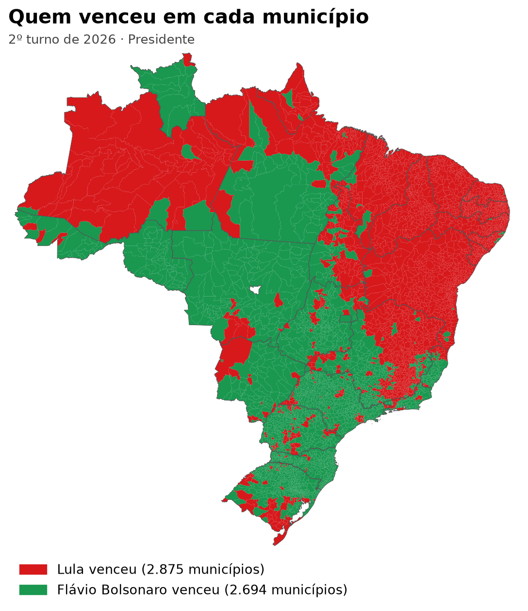
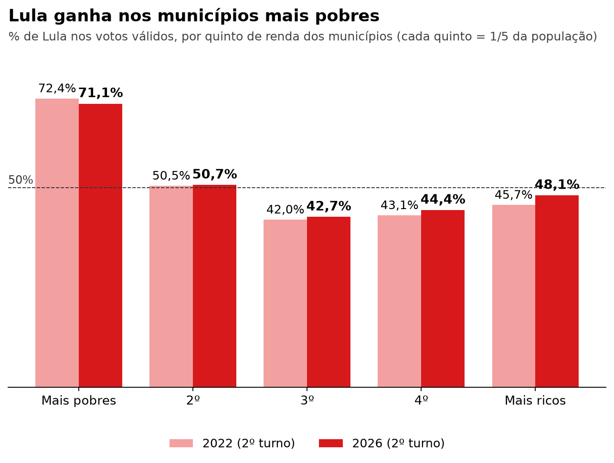
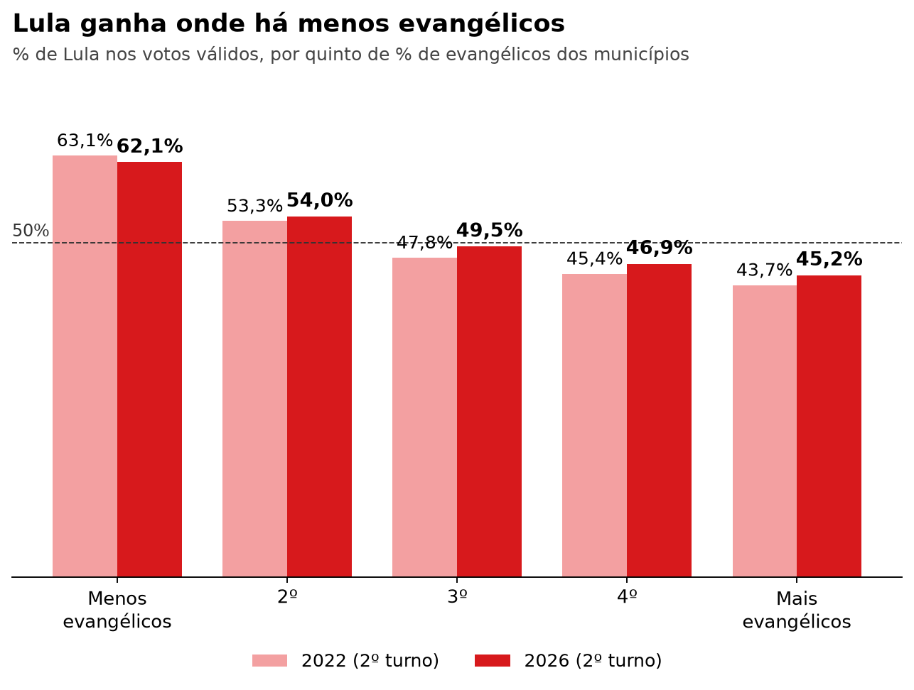
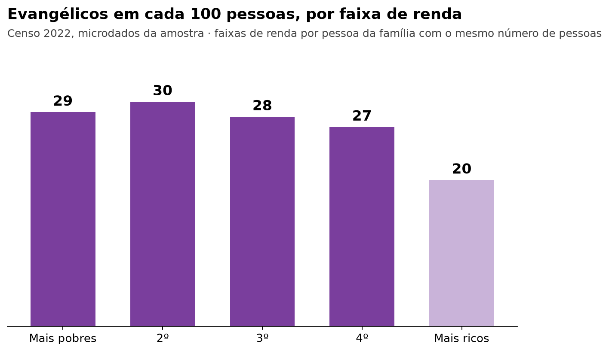
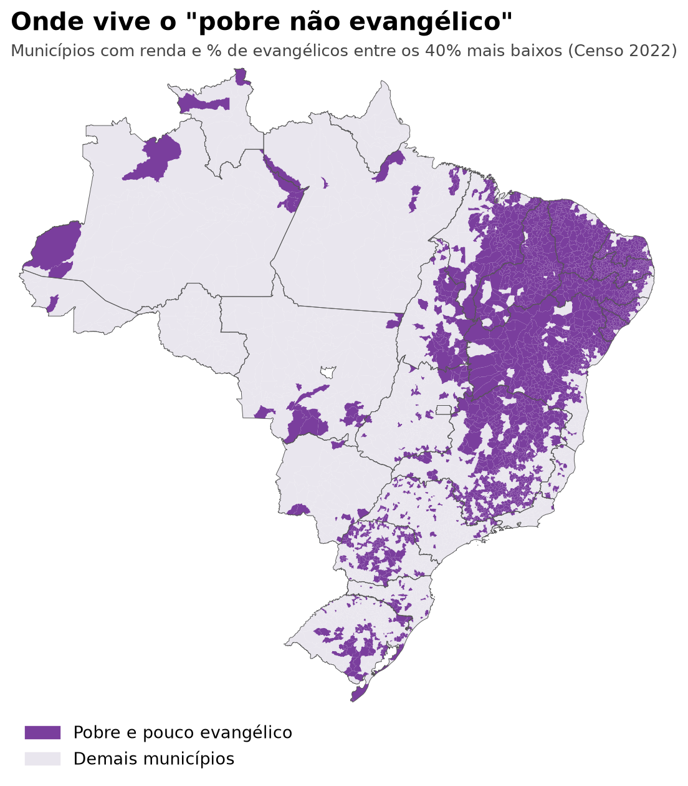
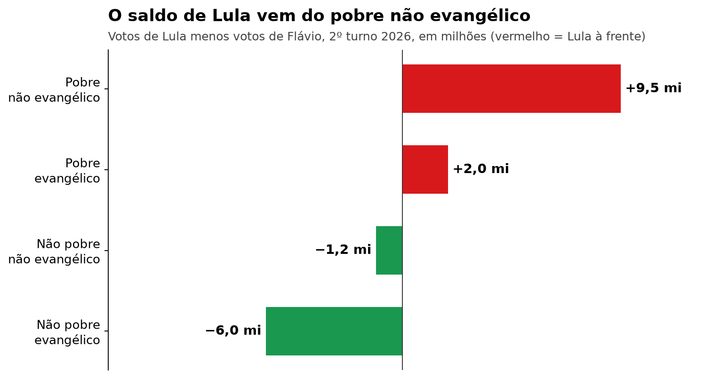

No primeiro turno, Flávio Bolsonaro terminou na frente (47,0% a 45,2% dos votos válidos), e muita gente concluiu que o Brasil tinha virado um país de direita. O segundo turno deu outra resposta. Com 100% das seções totalizadas pelo TSE, Lula teve 64.256.232 votos (51,79% dos válidos), contra 59.826.041 de Flávio (48,21%). A diferença é de 4,4 milhões de votos. Quando a escolha ficou entre dois, a maioria escolheu de novo o candidato da esquerda. E a vitória veio do mesmo lugar de 2022: dos municípios pobres onde há poucos evangélicos.
Em resumo
- Lula venceu o 2º turno de 2026 com 51,79% dos votos válidos. Em 2022 tinha vencido com 50,9%.
- Nos municípios ao mesmo tempo mais pobres e com menos evangélicos, Lula teve 68,7% dos votos. Saiu de lá com 9,5 milhões de votos a mais que Flávio, mais que o dobro da sua vantagem no país inteiro (4,4 milhões).
- No resto do Brasil somado, Flávio ficou 5,1 milhões de votos à frente. Fora desses municípios, Lula teria perdido.
- Ser pobre e ser evangélico não é a mesma coisa. Onde o pobre é evangélico, a disputa ficou apertada: Lula teve 53,9%.
1. O mapa do segundo turno
Lula foi o mais votado em 2.875 dos 5.570 municípios. O mapa repete o desenho de 2022: vermelho no Nordeste e em boa parte do Norte e do norte de Minas; verde no Centro-Oeste, no Sul, em São Paulo e em Rondônia, Roraima e Acre. Como os grandes centros pesam muito, o que decide a eleição não é a área pintada, mas o tamanho da vantagem em cada lugar.

Abrir o mapa: quem venceu em cada município →
2. Renda: Lula ganha onde se ganha menos
Separamos os municípios em cinco grupos de renda, do mais pobre ao mais rico, cada um com um quinto da população do país (renda média do responsável pelo domicílio no Censo 2022). No quinto mais pobre, Lula teve 71,1% dos votos válidos. Nos três quintos de renda média e alta, ficou entre 42,7% e 48,1%. A escada é a mesma de 2022.
Houve uma pequena mudança. Lula perdeu um pouco nos municípios mais pobres (72,4% → 71,1%) e ganhou nos mais ricos (45,7% → 48,1%). Mesmo assim, só o quinto mais pobre deu a Lula 11,2 milhões de votos de vantagem.

3. Religião: onde há menos evangélicos, Lula vence
A mesma divisão em cinco grupos, agora pela proporção de evangélicos, mostra o espelho da renda. No quinto com menos evangélicos (cerca de 15% da população), Lula teve 62,1%. No quinto com mais evangélicos (cerca de 39%), teve 45,2% e perdeu. Aqui também a diferença diminuiu um pouco desde 2022: Lula subiu entre os mais evangélicos (43,7% → 45,2%) e caiu entre os menos (63,1% → 62,1%).

4. Pobre e evangélico não são a mesma coisa
Os microdados do Censo 2022 mostram que os evangélicos estão mais presentes entre os pobres: de cada 100 pessoas nas duas faixas de menor renda, cerca de 29 a 30 são evangélicas; na faixa mais rica, 20. Mas a maioria dos pobres não é evangélica, e é aí que a renda e a religião se separam. Onde o pobre é evangélico, o voto se divide. Onde não é, Lula vence com folga.

5. O pobre não evangélico ganhou de novo
Chamamos de "pobre não evangélico" o município que está, ao mesmo tempo, entre os 40% de menor renda e entre os 40% com menos evangélicos. São 2.581 municípios, com 25,5 milhões de votos válidos, cerca de um quinto do eleitorado. Ali Lula teve 68,7% dos votos (em 2022, 70,4%) e venceu em 2.041 deles.
Os outros três grupos contam outra história. Nos municípios pobres e mais evangélicos, Lula teve 53,9%. Nos não pobres e menos evangélicos, 47,8%. Nos não pobres e mais evangélicos, 43,6%. Somando votos, só o pobre não evangélico deu a Lula 9,5 milhões de votos de vantagem; os outros três juntos deram a Flávio 5,1 milhões. A conta fecha nos 4,4 milhões de votos que elegeram Lula.

Abrir o mapa e escolher um município →

Ver no mapa por local de votação →
Esses municípios estão, sobretudo, no Nordeste: 1.476 dos 2.581 municípios do grupo, onde Lula teve 75,1% e uma vantagem de 9,2 milhões de votos. É o mesmo Brasil que decidiu 2022.
6. O que mudou desde 2022
A base de Lula não mudou, mas ficou um pouco menos concentrada. 278 municípios passaram de Lula (2022) para Flávio (2026), e só 31 fizeram o caminho contrário. Ainda assim, a votação nacional de Lula subiu de 50,9% para 51,8%, porque ele cresceu nas cidades grandes, mais ricas e mais evangélicas, onde cada ponto percentual vale muitos votos. Ou seja: Lula perdeu terreno em muitos municípios pequenos e ganhou votos onde mora mais gente.
7. Então o Brasil é de esquerda?
Votar em Lula não faz de ninguém um militante de esquerda, e o primeiro turno mostrou um país dividido, com a direita forte e organizada. Mas, na hora de escolher entre os dois projetos, a maioria votou de novo no candidato da esquerda. Essa maioria veio dos mesmos lugares de 2022: os municípios pobres onde há poucos evangélicos. Enquanto esses lugares votarem assim, a direita precisa vencer com folga no resto do país para chegar à Presidência. Em 2026, não conseguiu.
Explore o mapa interativo e veja como votou cada município e cada local de votação do Brasil no 2º turno de 2022 e de 2026.